에너지관리기사 (2007-05-13 기출문제)
1과목: 연소공학
1. 순수한 CH4를 건조공기로 연소시키고 난 기체 화합물을 응축기로 보내 수증기를 제거한 다음, 나머지 기체를 Orsat법으로 분석한 결과, 부피비로 CO2가 8.21%, CO가 5.02%, N2가 85.86%이었다. CH4 1kgmol당 몇 kgmol의 건조공기가 필요한가?
- 7.3
- 8.5
- 10.3
- 11.9
(정답률: 28%)

2. 분자식 CmHn인 탄화수소가스 1Nm3를 완전연소시키는데 필요한 이론공기량(Nm3)은? (단, CmHn의 m, n은 상수이다.)
- 4.76m+1.19n
- 1.19m+4.7n
- m+n/4
- 4m+0.5n
(정답률: 71%)
3. C 84w%, H 12w%, 수분 4w%이 중량조성을 갖는 액체 연료에서 수분을 완전히 제거한 다음 1시간당 5kg씩을 완전연소시키는 데 필요한 이론공기량은 약 몇 Nm3/h인가?
- 55.6
- 65.8
- 73.5
- 89.2
(정답률: 40%)
4. 황(S) 1kg을 이론공기량으로 완전연소시켰을 때 발생하는 연소가스량(Nm3)은?
- 0.70
- 2.00
- 2.63
- 3.33
(정답률: 46%)
5. 석탄을 완전 연소시키기 위하여 필요한 조건에 대한설명 중 틀린 것은?
- 공기를 적당하게 보내 피연물과 잘 접촉시킨다.
- 연료를 착화온도 이하로 유지한다.
- 통풍력을 좋게 한다.
- 공기를 예열한다.
(정답률: 89%)
6. 분젠 버너를 사용할 때 가스의 유출속도를 점차 빠르게 하면 불꽃 모양은 어떻게 되는가?
- 불꽃이 엉클어지면서 짧아진다.
- 불꽃이 엉클어지면서 길어진다.
- 불꽃의 형태는 변화없고 밝아진다.
- 매연을 발생하면서 연소한다.
(정답률: 75%)
7. 연료가 완전연소 할 경우 배가스의 분석결과에 따르면 CO2가 생긴다. 이때, (CO2max)를 옳게 나타낸 식은?
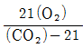
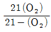
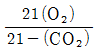
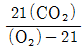
(정답률: 48%)
8. 연료 사용설비의 배기가스에 대한 대기오염을 방지하는 방법으로 가장 거리가 먼 것은?
- 집진장치를 설치한다.
- 공기비를 높인다.
- 연료유의 불순물을 제거한다.
- 연소장치를 정기적으로 청소한다.
(정답률: 90%)
9. 일정한 체적의 저장용기에 담겨 있는 기체연료의 재고 관리상 측정해야 할 사항을 가장 적당한 것은?
- 부피와 온도
- 압력과 부피
- 온도와 압력
- 압력과 습도
(정답률: 58%)
10. 미분탄연소의 일반적인 특징에 대한 설명 중 틀린 것은?(오류 신고가 접수된 문제입니다. 반드시 정답과 해설을 확인하시기 바랍니다.)
- 사용연료의 범위가 좁다.
- 소량의 과잉공기로 단시간에 완전연소가 되므로 연소, 효율이 높다.
- 부하변동에 대한 적응성이 좋다.
- 회(灰), 먼지 등이 많이 발생하여 집진장치가 필요하다.
(정답률: 72%)
11. 어떤 가스를 분석하였더니 보기와 같았다. 이 가스 Nm3를 연소시키는 데 필요한 이론산소량은 몇 Nm3인가?
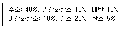
- 0.2
- 0.4
- 0.6
- 0.8
(정답률: 45%)
12. 보일러의 급수 및 발생증기의 엔탈피를 각각 150,670kcal/kg이라고 할 때 20,000kg/h의 증기를 얻려면 공급열은 몇 kcal/h 인가?
- 9.6×106
- 10.4×106
- 11.7×106
- 12.2×106
(정답률: 80%)
13. 연료의 황(S)분에 의한 저온부식을 방지하는 방법으로 옳은 것은?
- 과잉공기를 적게 하면서 절탄기부의 배기가스 온도를 올린다.
- 과잉공기를 적게 하면서 절탄기부의 배기가스 온도를 낮춘다.
- 과잉공기를 많게 하면서 절탄기부의 배기가스 온도를 올린다.
- 과잉공기를 많게 하면 절탄기부의 배기가스 온도를 낮춘다.
(정답률: 58%)
14. 기체연료의 일반적인 특징에 대한 설명 중 틀린 것은?
- 화염온도의 상승이 비교적 용이하다.
- 연소장치의 온도 및 온도분포의 조절이 어렵다.
- 다량으로 사용하는 경우 수송 및 저장이 어렵다.
- 연소 후에 유해성분의 잔류가 거의 없다.
(정답률: 72%)
15. 연소가스 중의 질소산화물 생성을 억제하기 방법으로 틀린 것은?
- 2단 연소
- 고온 연소
- 저공기비 연소
- 배가스 재순환 연소
(정답률: 87%)
16. 액화석유가스의 성질에 대한 설명 중 틀린 것은?
- 가스의 비중은 공기보다 무겁다.
- 상온, 상압에서는 액체이다.
- 천연고무를 잘 용해시킨다.
- 물에는 잘 녹지 않는다.
(정답률: 91%)
17. 액체연료장치 중 회전식 버너의 특징으로 옳은 것은?
- 분사각은 20~50°정도이다.
- 유량조절범위는 1:3 정도이다.
- 사용 유압은 0.3~0.5kg/cm2 정도이다.
- 화염이 길어 연소가 불안정하다.
(정답률: 53%)
18. 연료비가 크면 나타나는 일반적인 현상이 아닌 것은?
- 고정탄소량이 증가한다.
- 불꽃은 짧은 단염이 된다.
- 매연의 발생이 적다.
- 착화온도가 낮아진다.
(정답률: 39%)
19. 어느 기체 혼합물을 10kPa, 20℃, 0.2m3인 초기상태로부터 0.1m3으로 실린더 내에서 가역단열 압축 할 때 최종 상태의 온도는 약 몇 K인가? (단, 이 혼합가스의 정적비열은 0.7157kJ/kg∙K, 기체상수는0.2695kJ/kg∙K이다.)
- 381
- 387
- 397
- 400
(정답률: 17%)
20. 다음 중 연소속도와 가장 밀접한 관계가 있는 것은?
- 염의 발생속도
- 착화속도
- 산화속도
- 환원속도
(정답률: 55%)
2과목: 열역학
21. 초기조건이 1atm, 60℃인 공기를 정적과정을 통해 가열한 후 정압에서 냉각과정을 통하여 5atm, 60℃로 냉각할 때 이 과정에서 전체 열량의 변화는 약 몇 kcal/kmol인가? (단, Cv=5kcal/kmolㆍ℃, CP=7kcal/kmolㆍ℃이며, 이상기체로 가정한다.)
- -964
- -1964
- -2664
- -3664
(정답률: 35%)
22. 평형에 대한 설명 중 틀린 것은?
- 압력이 일정한 것은 기계적인 평형에 속한다.
- 감온온도와 압력에 있는 여러 상은 각 성분의 화학포텐셜이 모든 상에서 같게 될 때 평형에 있게 된다.
- 화학반응에의 평형은 화학적 친화력이 같은 것이다.
- 열적평형은 열역학 제1법칙이다.
(정답률: 39%)
23. 공기 10Nm3을 1기압의 등압하에서 0℃로부터 80℃로 가열하는 데 필요한 열량은 약 몇 kcal인가? (단, 공기의 정압비열은 0.24kcal/kgㆍ℃이고, 정적비열은 0.17kcal/kg℃이며, 공기의 분자량은 28.96kg/kmol이다.)
- 238
- 248
- 258
- 268
(정답률: 41%)
24. 용기 속에 절대압력이 8.5kgf/cm2, 온도 52℃인 이상 기체가 49kg 들어 있다. 이 기체의 일부가 누출되어 용기 내 절대압력이 4.15kgf/cm2, 온도 27℃가 되었다면 밖으로 누출된 기체는 약 몇 kg인가?
- 10.4
- 23.1
- 35.9
- 47.6
(정답률: 60%)
25. 카르노사이클에서 고열원의 온도 T로부터 열량 Q를 흡수하고, 저열원의 온도 T0로 열을 방출할 때, 방출열량 Q0에 대한 표현으로 옳은 것은? (단, ηc는 열효율이다.)
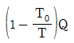
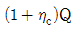
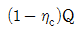
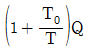
(정답률: 74%)
26. 가역적으로 움직이는 열엔진이 260℃에서 252.0kcal의 열을 흡수하여야 37.8℃로 배출한다. 37.8℃의 열흡수원에서 흡수한 열량은 몇 kcal인가?
- 0
- 52.0
- 1⑤.1
- 146.9
(정답률: 22%)
27. 말단 확대 노즐 건조포화증기가 단열적으로 흘러가고, 그 사이에 엔탈피가 118kcal/kg만큼 감소한다. 노즐 입구에서의 속도가 무시할 수 있을 정도로 작을 때 노즐 출구에서의 속도는 약 몇 m/s인가?
- 996
- 1,294
- 1,524
- 2,123
(정답률: 25%)
28. 교축(Throttling)과정은 다음 중 어느 과정이라고 할 수 있는가?
- 등온과정
- 등압과정
- 등엔트로피 과정
- 등엔탈피 과정
(정답률: 74%)
29. 건포화증기의 건도는 얼마인가?
- 0
- 0.5
- 0.7
- 1.0
(정답률: 65%)
30. 수은의 정상 비등점은 356.9℃이다. 이 온도와 25℃사이에서 작동하는 수은 열기관의 최대 이론 열효율은 약 얼마인가?
- 0.450
- 0.527
- 0.635
- 0.735
(정답률: 40%)
31. 공기 표준 브레이튼(Brayton) 사이클에서 공기의 등 엔트로피 압축으로 1기압 20℃의 공기를 다음 중 어느 압력까지 압축하였을 때 효율이 가장 높은가?
- 2기압
- 3기압
- 4기압
- 5기압
(정답률: 41%)
32. 평균 유효압력이 5kgf/cm2이고 행정체적이 200mL의 가솔린 엔진에서 사이클당 엔진이 하는 일은 약 몇 kcal인가?
- 0.24
- 0.53
- 1.0
- 1.5
(정답률: 16%)
33. 엔트로피에 대한 설명으로 틀린 것은?
- 엔트로피는 자연현상의 비가역성을 나타내는 척도가 된다.
- 엔트로피는 상태함수이다.
- 우주의 모든 현상은 총 엔트로피가 증가하는 방향으로 진행되고 있다.
- 자유팽창, 종류가 다른 가스의 혼합, 액체 내의 분자의 확산 등의 과정에서 엔트로피가 변하지 않는다.
(정답률: 67%)
34. 냉장고가 저온에서 400kcal/h의 열을 흡수하고, 고온체에서 560kcal/h로 열을 방출한다. 이 냉장고의 성능계수(C.O.P)는?
- 0.5
- 1.5
- 2.5
- 20
(정답률: 64%)
35. 카르노사이클로 작용하는 냉동기를 사용하여 냉동실의 온도를 -8℃로 유지시키는 데 5.4×106J/h의 일이 소비되었다. 외기의 온도가 5℃라 할 때, 냉동기에서 냉동톤(Rt)은 약 얼마인가? (단, 1RT=2.320kcal/h이다.)
- 2.4
- 5.8
- 7.9
- 12.4
(정답률: 25%)
36. 다음 중 각 과정을 표시한 것으로 틀린 것은? (단, Q는 열량, H는 엔탈피, W는 일, U는 내부에너지이다.)
- 등온과정에서 Q = W
- 단열과정에서 Q = WQ
- 정압과정에서 Q = △H
- 등적과정에서 Q = △U
(정답률: 60%)
37. 압력이 10kgf/cm2인 증기의 엔트로피가 1.2kcal/kg∙K일 때 이 증기의 엔탈피는 약 몇 kcal/kg인가? (단, 압력기준의 포화액 엔트로피 S'=0.5086kcal/ kg∙K, 포화증기 엔트로피 S"=1.5745kcal/kgㆍK이고 포화액 엔탈피 h'=181.19kcal/kg, 포화증기 엔탈피 h"=663.2kcal/kg이다.)
- 129
- 257
- 363
- 494
(정답률: 30%)
38. 다음 중 수증기를 사용하는 발전소의 열역학 사이클과 가장 관계 깊은 것은?
- 랭킨 사이클
- 오토 사이클
- 디젤 사이클
- 브레이턴 사이클
(정답률: 67%)
39. 브레이튼(Brayton) 사이클은 어떤 기관의 사이클인가?
- 가스터빈 기관
- 증기 기관
- 가솔린 기관
- 디젤 기관
(정답률: 72%)
40. 표준공기 디젤 사이클(Air-standard Diesel Cycle)은?
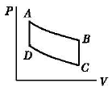
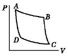
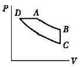
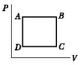
(정답률: 44%)
3과목: 계측방법
41. 다음 열전대 온도계 중 가장 높은 온도를 측정할수 있는 것은?
- 동 - 콘스탄난
- 크로멜 - 알루엘
- 백금 - 백금로듐
- 철 - 콘스탄탄
(정답률: 78%)
42. 서미스터 온도계에 대한 설명 중 틀린 것은?
- 온도에 의한 저항변화를 이용한다.
- 응답이 빠르다.
- 재현성이 좋다.
- 좁은 장소의 측온에 유리하다.
(정답률: 50%)
43. 열전대온도계에서 열전대의 구비조건 중 틀린 것은?
- 열기전력이 크고 온도상승에 따라 연속적으로 상승할 것
- 장시간 사용하여도 변형이 없을 것
- 재생도가 높고 가공이 용이할 것
- 전기저항, 저항온도계수와 열전도율이 클 것
(정답률: 66%)
44. 고체팽창식 온도계에는 두 개의 선팽창계수가 다른 물질을 넣어주는데 다음 중 선팽창계수가 큰 재질로 사용되는 것은?
- 인바(Invar)
- 황동
- 석용봉
- 산화철
(정답률: 72%)
45. 방사온도계의 측정원리는 어떤 원리(법칙)를 응용한 것인가?
- 비인의 법칙(Wien's Law)
- 스테판-볼츠만의 법칙(Stefan-Bolrzman's Law)
- 라울의 법칙(Raoult's Law)
- 본드의 법칙(Bond's Law)
(정답률: 69%)
46. 다음 중 피토관의 장점이 아닌 것은?
- 제작비가 싸다.
- 구조가 간단하다.
- 정도(精度)가 높다.
- 부착이 용이하다.
(정답률: 61%)
47. 다음 중 도시가스미터에 사용되는 유량계의 형태는?
- Oval Type
- Drum Type
- Diaphragm Type
- Nozzle Type
(정답률: 30%)
48. 면적식 유량계의 특징에 대한 설명 중 틀린 것은?
- 측정치가 균등 눈금으로 얻어진다.
- 고점도 유체의 측정이 가능하다.
- 적은 유량도 측정이 가능하다.
- 정도는 ±0.01% 정도로 아주 좋다.
(정답률: 67%)
49. 유속 5m/s의 물 흐름 속에 피토관을 세웠을 때 수주의 높이는 약 몇 m인가?
- 1.03
- 1.28
- 1.65
- 1.94
(정답률: 39%)
50. 고속, 고압 유제의 유량측저에 적당하며 레이놀즈수가 높을 때 주로 사용되는 차압식 유량계는?
- 벤투리미터
- 플로노즐
- 오리피스
- 피토관
(정답률: 43%)
51. 연소가스 중의 CO와 H2의 측정에 주로 사용되는 가스분석계는?
- 과잉공기계
- 질소가스계
- 미연가스계
- 탄산가스계
(정답률: 64%)
52. 벨로스식 압력계에 대한 설명 중 틀린 것은?
- 구조가 비교적 간단하다.
- 금속 벨로스의 압력에 의한 신축을 이용한 것이다.
- 측정압력은 2.5~1,000kg/cm2 정도로 아주 넓다.
- 재질로는 인청동, 스테인리스가 주로 사용된다.
(정답률: 62%)
53. U자관 압력계에 사용되는 액주의 구비조건에 대한 설명 중 틀린 것은?
- 열팽창계수가 작을 것
- 점도가 클 것
- 모세관 현상이 적을 것
- 일정한 화학성분일 것
(정답률: 70%)
54. 절대압력 700mmHg는 약 몇 kPa인가?
- 93
- 103
- 113
- 123
(정답률: 53%)
55. 다음 액주계에서 γ, γ1이 비중을 표시할 때 압력(PX)을 구하는 식은?
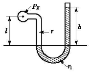
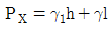
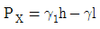
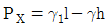
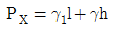
(정답률: 58%)
56. 다음 중 오르사트(Orsat) 분석기에서 CO2의 흡수액은?
- 산성 염화 제1구리 용액
- 알칼리성 염화 제1구리 용액
- 염화암모늄 용액
- 수산화칼륨 용액
(정답률: 65%)
57. 열전도율형 CO2분석계의 사용시 주의사항에 대한 설명 중 틀린 것은?
- 브리지의 공급 전류의 점검을 확실하게 한다.
- 셀의 주의온도와 측정가스온도는 거의 일정하게 유지시키고 온도의 과도한 상승은 피한다.
- H2의 혼입은 지시를 높여 준다.
- 가스 유측은 거의 일정하게 하여야 한다.
(정답률: 79%)
58. 보일러에서 가장 기본이 되는 제어는?
- 수치 제어
- 시퀀스 제어
- 피드백 제어
- 자동 조절
(정답률: 48%)
59. 다음 제어방식 중 잔류편차(Off Set)를 제거하고 응답시간이 가장 빠르며 진동이 제거되는 제어방식은?
- P
- PI
- I
- PID
(정답률: 66%)
60. 자동제어에서 미분동작을 가장 옳게 설명한 것은?(오류 신고가 접수된 문제입니다. 반드시 정답과 해설을 확인하시기 바랍니다.)
- 조절계의 출력변화가 편차에 비례하는 동작
- 조절계의 출력변화의 속도가 편차에 비례하는 동작
- 조절계의 출력변화가 편차의 변화속도에 비례하는 동작
- 조작량이 어떤 동작 신호의 값을 경계로 하여 완전히 전개 또는 전폐되는 동작
(정답률: 62%)
4과목: 열설비재료 및 관계법규
61. 다음 중 염기성 슬래그에 대한 내침식성이 가장 큰 내화물은?
- 샤모트질 내화로재
- 마그네시아질 내화로재
- 납석질 내화로재
- 고알루미나질 내화로재
(정답률: 78%)
62. 지르콘(ZrSiO4)내화물의 특징에 대한 설명 중 틀린 것은?
- 열팽창률이 작다.
- 내스플링성이 크다.
- 염기성 용재에 강하다.
- 내화도는 일반적으로 SK 37~38 정도이다.
(정답률: 53%)
63. 다음 중 보온재나 단열재 및 보냉재를 구분하는 기준은?
- 열전도율
- 안전사용도
- 압력
- 내화도
(정답률: 74%)
64. 다음 중 증기 배관용으로 사용하지 않는 것은?
- 인라인 증기믹서
- 시스탄 밸브
- 사일렌서
- 벨로스형 신축관이음
(정답률: 62%)
65. 다음 중 에너지관리공단 이상장에게 권한이 위탁된 업무가 아닌 것은?
- 에너지 관리대상자의 지정
- 에너지 관리지도
- 에너지 사용계획의 검토
- 검사대상기기조종자의 선임ㆍ해임신고의 접수
(정답률: 18%)
66. 열사용기자재 관리규칙에서 정한 검사대상기기에 대한 검사의 종류가 아닌 것은?
- 계속사용검사
- 개방검사
- 개조검사
- 설치장소 변경검사
(정답률: 61%)
67. 다음 중 파이프의 열변형에 대응하기 위한 이음은?
- 가스 이음
- 플랜지 이음
- 신축 이음
- 소켓 이음
(정답률: 71%)
68. 밸브의 몸통이 둥근 달걀형 밸브로서 유체의 압력 감소가 크므로 압력이 필요로 하지 않을 경우나 유량 조절음이나 차단음으로 적합한 밸브는?
- 글로브 밸브
- 체크 밸브
- 버터플라이 밸브
- 슬루스 밸브
(정답률: 70%)
69. 광석을 공기의 존재하에서 가열하여 금속한화물 또는 산소를 함유한 금속화합물로 바꾸는 조작을 무엇이라고 하는가?
- 염화배소
- 환원배소
- 산화배소
- 황산화배소
(정답률: 69%)
70. 보온재의 열전도계수에 대한 설명 중 틀린 것은?
- 보온재의 함수율이 크게 되면 열전도계수도 증가한다.
- 보온재의 기공률이 클수록 열전도계수는 작아진다.
- 보온재는 열전도계수가 작을수록 좋다.
- 온도가 상승하면 열전도계수는 감소된다.
(정답률: 60%)
71. 에너지기본법에서 정의하는 에너지 사용자란?
- 에너지 생산공자의 공장장
- 에너지 생산공자의 열관리기사
- 에너지관리공단 이사장
- 에너지 사용시설의 소유자
(정답률: 67%)
72. 에너지 절약형 시설에 해당되지 않는 것은?
- 에너지 설비의 설치를 위한 투자시설
- 에너지 절약형 공정개선을 위한 시설
- 에너지 이용합리화를 통한 온실가스의 배출감소를 위한 시설
- 에너지 절약이나 온실가스의 배출감소를 위하여 필요하다고 산업자원부장관이 인정하는 시설
(정답률: 74%)
73. 평균에너지 소비효율의 산정방법에 대한 내용 중 틀린 것은?
- 산정방법, 개선시간, 공표방법 등 필요한 사항은 산업자원부령으로 정한다.
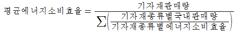
- 평균에너지 소비효율의 개선기간은 개선명령으로 부터 다음해 1월 31일까지로 한다.
- 개선명령을 받은 자는 개선명령일부터 60일이내에 개선명령 이행계획을 수립하여 산업자원부장관에게 제출하여야 한다.
(정답률: 62%)
74. 산업자원부장관이 에너지사용계획을 제출받을 때 협의 결과를 공공사업주관자에게 통보하여야 하는 기간은 얼마나 되며(제출받은 날로부터 기산), 필요하다고 인정할 경우 이를 연장할 수 있는 기간은?
- 30일 이내, 10일 범위 내
- 40일 이내, 20일 범위 내
- 30일 이내, 20일 범위 내
- 40일 이내, 10일 범위 내
(정답률: 35%)
75. 에너지 이용합리화에서 정한 자발적 협약의 평가기준이 아닌 것은?
- 계획대비 달성률 및 투자실적
- 자원 및 에너지의 재활용 노력
- 에너지 절감량 또는 에너지의 합리적인 이용을 통한 온실가스의 배출감소량
- 에너지 절약을 위한 연구개발 및 보급촉진
(정답률: 64%)
76. 고온용 무기질 보온재로서 석영을 녹여 만들며, 내약품성이 뛰어나고, 최고 사용온도가 1,100℃ 정도인것은?
- 유리섬유(Glass Wool)
- 석면(Asbestos)
- 펄라이트(Pearlite)
- 세라믹 파이버(Ceramic Fiber)
(정답률: 70%)
77. 터널가마(Tunnel Kiln)의 특징에 대한 설명 중 틀린 것은?
- 연속식 가마이다.
- 사용연료에 제한이 없다.
- 대량생산이 가증하고 유지비가 저렴하다.
- 노내 온도조절이 용이하다.
(정답률: 82%)
78. 제련에서 중금속 비화물이 균일하게 녹아 있는 인공적인 혼합물이며, 원료 중에서 As, Sb 등이 다량으로 들어 있고, 이것이 환원분위기에서 산화 제거되지 않을 때 생기는 것은?
- 스파이스
- 매트
- 플럭스
- 슬래그
(정답률: 53%)
79. 다음 보온재 중 가장 낮은 온도에서 사용될 수 있는 것은?
- 석면
- 규조토
- 우레탄 폼
- 탄산마그네슘
(정답률: 74%)
80. 열처리로의 구조에 따른 분류가 아닌 것은?
- 상형로
- 진공로
- 대차로
- 회전로
(정답률: 60%)
5과목: 열설비설계
81. 과열기를 사용하였을 때의 장점이 아닌 것은?
- 이론열효율의 증가
- 원동기 중의 열낙차의 감소
- 증기 소비량의 감소
- 수격작용 방지
(정답률: 25%)
82. 다음 보기에서 설명하는 증기 트랩(Trap)은?
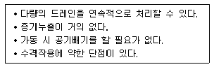
- 열동식 트랩
- 버킷형 트랩
- 플로트식 트랩
- 디스크식 트랩
(정답률: 83%)
83. 성적계수(COP)R가 5.2인 증기압축 냉동기의 1냉동톤당 이론압축기 구동마력(PS)은 약 얼마인가?
- 1
- 2
- 3
- 4
(정답률: 22%)
84. 원통보일러의 노통은 주로 어떤 열응력을 받는가?
- 압축응력
- 인장응력
- 굽힘응력
- 전단응력
(정답률: 65%)
85. B/C유 연소보일러의 연소 배가스 온도를 측정한 결과 300℃였다. 여기에 공기예열기를 설치하여 배가스온도를 150℃까지 내렸다면 연료 절감률은 약 몇 % 인가? (단, B/C 유의 발열량 9,750kcal/kg, 배가스량 13.6Nm3/kg, 배가스의 비열 0.33kcal/Nm3℃, 공기 예열기의 효율은 0.75이다.)
- 4.3
- 5.2
- 6.6
- 7.2
(정답률: 50%)
86. 막대기 이음 용접에서 하중(W)이 3,000kg, 용접높이(h)가 8mm일 때, 용접길이는 몇 mm로 설계하여야 하는가? (단, 재료의 허용인장응력(σ)은 5kg/mm2로 한다.)
- 52
- 75
- 82
- 100
(정답률: 64%)
87. 용접에서 발생한 잔류응력을 제거하기 위한 열처리는?
- Tempering
- Annealing
- Quenching
- Normalizing
(정답률: 67%)
88. 다음은 병류식 열교환기 내의 온도변화를 그래프로 나타낸 것이다. 병류식 열교환기에서 작용되는 △Tm에 관한 식은? (단, h는 고온측, c는 저온측, 1은 입구, 2는 출구를 의미한다.)
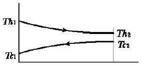
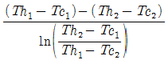
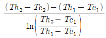
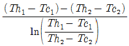
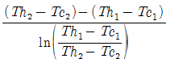
(정답률: 42%)
89. 다음 중 인젝터의 시동순서로 가장 옳은 것은?
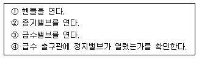
- ④ → ③ → ② → ①
- ② → ③ → ① → ④
- ③ → ② → ① → ④
- ④ → ③ → ① → ②
(정답률: 65%)
90. 다음 그림의 3겹층으로 되어 있는 평면벽의 평균 열전도율을 구하면 약 몇 kcal/mㆍchㆍ℃인가? (단, 열전도율은 λA=1.0kcal/mㆍhㆍ℃, λB=2.0kcal/mㆍhㆍ℃ λC =1.0kcal/mㆍhㆍ℃)
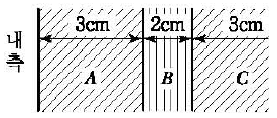
- 0.94
- 1.14
- 1.24
- 2.44
(정답률: 34%)
91. 캐리오버(Carry-over)의 발생원인으로 가장 거리가 먼 것은?
- 프라이밍 또는 포밍의 발생
- 보일러수의 농축
- 밸브의 급개방
- 저수위 운전
(정답률: 80%)
92. 일반적으로 보일러 부하가 증가할수록 복사 과열기와 대류 과열기의 과열온도는 어떻게 되는가?
- 복사과열기 온도는 상승하고, 대류과열기 온도는 하강한다.
- 복사과열기 온도는 하강하고, 대류과열기 온도는 상승한다.
- 두 과열기 모두 온도가 상승한다.
- 두 과열기 모두 온도가 하강한다.
(정답률: 46%)
93. 보일러의 노통이나 화실과 같은 원통 부분이 외측으로부터의 압력에 견딜 수 없게 되어 눌려 찌그러져 찢어지는 현상을 무엇이라 하는가?
- 블리스터
- 압괴
- 응력부식균열
- 라미네이션
(정답률: 85%)
94. 다음 중 pH 조정제가 아닌 것은?
- 수산화나트륨
- 탄닌
- 암모니아
- 탄산소다
(정답률: 56%)
95. 리벳이음에 비하여 용접이음의 장점을 옳게 설명한 것은?
- 이음효율이 좋다.
- 전류응력이 발생되지 않는다.
- 진동에 대한 감쇠력이 높다.
- 응력집중에 대하여 민감하지 않다.
(정답률: 71%)
96. 지름이 0.2m인 원관의 외벽온도가 550K로 유지되고 주위온도가 300K에 노출되어 있을 때 외벽으로부터 주위로의 열손실은 약 몇 W인가? (단, 외벽표면의 흡수율과 방사율은 0.9이고 스테판-볼츠만 상수는 5.67×108W/m2K4이다.)
- 133.7
- 155.5
- 175.7
- 195.3
(정답률: 8%)
97. 대향류 열교환기에서 가열유체는 260℃에서 120℃로 나오고 수열유체는 70℃에서 110℃로 가열될 때 전열면적은 약 몇 m2인가? (단, 열관류율은 125W/m2ㆍ℃이고 총 열부하는 180,000W이다.)
- 7.24
- 14.06
- 16.04
- 23.32
(정답률: 21%)
98. 수직 증발관을 가열할 때 발생하는 2상 유동형태의 순서로 옳은 것은?
- 기포류→환상류→슬러그류(Slug Flow)→분무류
- 기포류→슬러그류(Slug Flow)→환상류→분무류
- 기포류→분무류→슬러그류(Slug Flow)→환상류
- 기포류→분무류→환상류→슬러그류(Slug Flow)
(정답률: 16%)
99. 다음 중 복사 열전달에 적용되는 법칙은?
- 뉴턴의 냉각법칙
- 퓨리에의 법칙
- 스테판-볼츠만의 법칙
- 돌턴의 법칙
(정답률: 77%)
100. 상변화를 수반하는 물 또는 유체의 가열변화 과정 중 전열면에 비등기포가 생겨 열유속이 급격히 증대되고, 가열면 상에 서로 다른 기포의 발생이 나타나는 비등과정은?
- 자연대류비등
- 핵비등
- 천이비등
- 막비등
(정답률: 79%)
CH4 + 2O2 → CO2 + 2H2O
이 반응식에서 CH4 1mol이 소모되면 CO2 1mol이 생성됩니다. 따라서 CO2의 부피비 8.21%는 CH4의 부피비 8.21%와 같습니다.
CO2의 부피비 8.21%는 100L의 기체 중 8.21L이 CO2라는 뜻입니다. 따라서 CH4의 부피도 8.21L입니다.
CO의 부피비 5.02%는 CH4의 부피비의 절반인 4.1⑤L입니다. 이는 CO2 1mol과 CO 1mol이 생성될 때 소모되는 CH4의 양과 같습니다.
따라서 CH4 1kgmol당 CO2 1kgmol과 CO 1kgmol이 생성되므로, 건조공기 11.9kgmol이 필요합니다.
정답은 "11.9"입니다.